Open Science: pros, cons and community
0 This presentation
https://github.com/richelbilderbeek/open_science_presentation_enlight_20240228
1 Goals
- To discuss Open Science
- To share the usefulness of a community
1.1 What I do
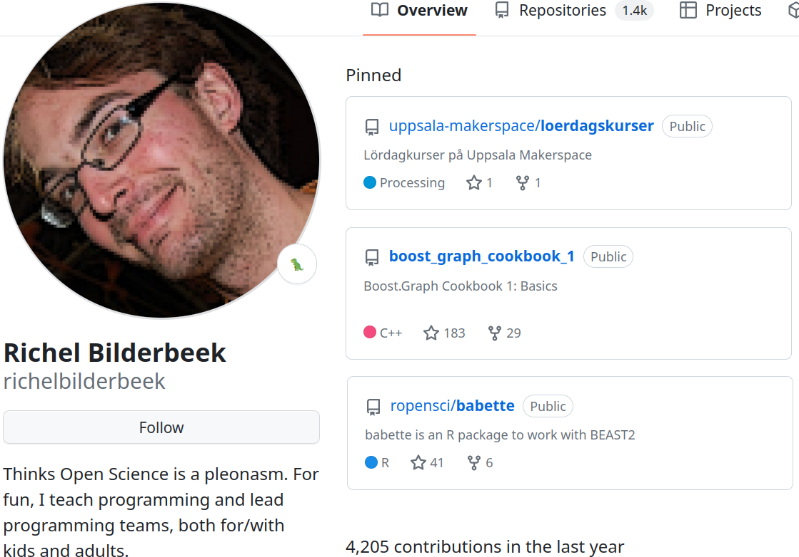
- 1.75 postdocs
- support at Uppsala University
- founder of Open Science Uppsala
- https://github.com/richelbilderbeek
2 Experiment 1
- Research question: what are the biggest drawbacks of Open Science for a researcher today?
- Methods: search 5 hours, collect all results, rank these
2.1 Results: least relevant
Feature:
- Open Methods describe ‘how to do research’, not ‘what to research’ (1)
Dispelling myths:
No idea what to think of this:
- Open Science may be neoliberal (3)
2.2 Results: maybe relevant
- Open Access may be less inclusive for the poor (4) (5)
- There may be impactful cultural and institutional constraints on all facets of Open Science (2)
- Training to do proper Open Data may be unaffordable for the poor (6) (5)
- Open Methods may diminish qualitative methodologies for the sake of reproducibility (5)
- Open Software may be hindered by reluctance to share code (2)
- Open Peer Review may give bias and exclusion (5)
- Open Evaluation may lead to perverse incentives (1)
- Competition between scientists may discourage openness (2), researcher may be put in a social dilemma: (2)
- Open Evaluation does not encourage to publish negative results (2)
2.3 Results: most relevant
- Open Methods takes more time (7) (2)
- Open Data (a.o. FAIRification) takes more time (7) (2), especially sharing sensitive data is more complex, (2)
- Open Data excludes/inconveniences the industry (5)
- Open Data has no clear legal guidelines, nor sanctions (2)
- Lack of standards for sharing research materials (2)
- Open Infrastructure is not in place yet (1) (2)
3 Experiment 2
- Research question: what are my favorite papers on Open Science that I know?
- Methods: copy-paste these from earlier discussions
3.1 Result: regular science is a problem (8)
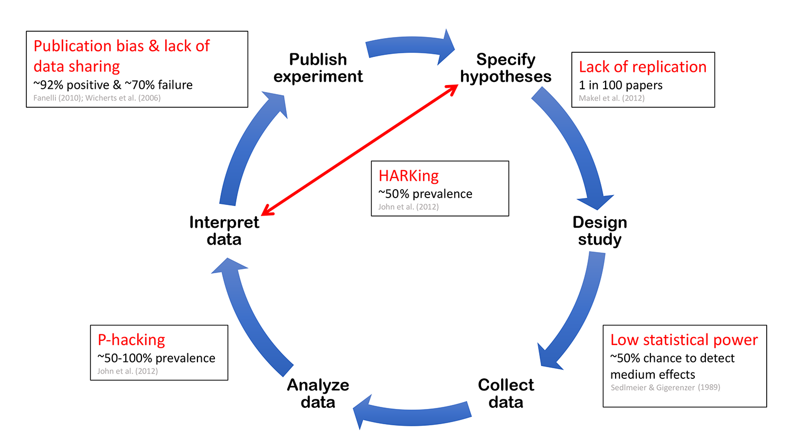
⚠️ there exists a version with incorrect/inflated numbers!
3.2 Result: Open Science reduces publication bias (7)
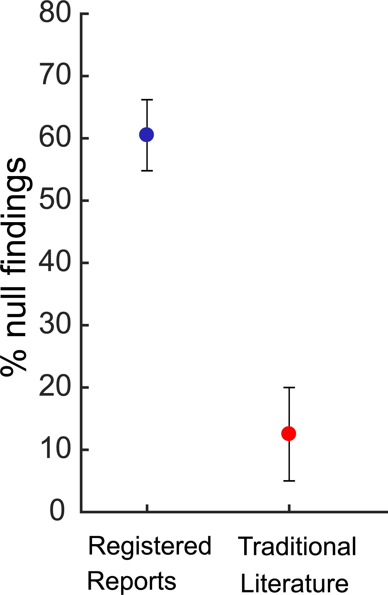
- The file drawer problem
- Registered reports: publish part of paper before collecting data
3.3 Result: Open Science results in better papers 1/3 (9)
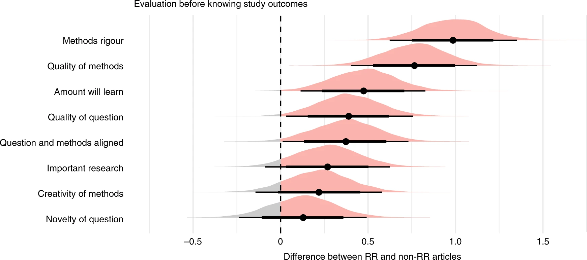3.4 Result: Open Science results in better papers 2/3 (9)
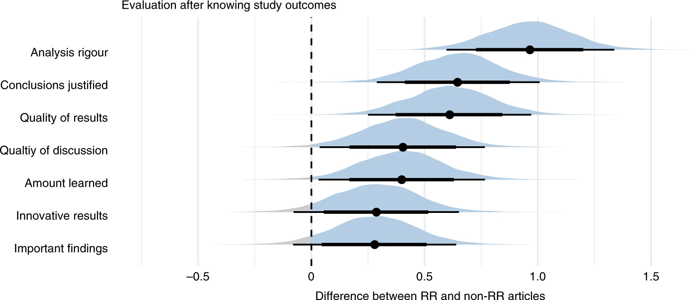3.5 Result: Open Science results in better papers 3/3 (9)
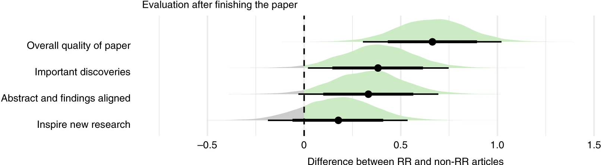4 The Open Science Uppsala community
- Who lives in a town with a local community?
- Who has visited that local community at least once?
4.1 Open Science Uppsala goals
- teach
- discuss
- English
- regularly
- everyone
- Uppsala
- free
- publicly
- scholarly
4.2 My statement
literature + community > literature + more_literature
4.3 It takes time to setup an infrastructure

4.4 Open may be unfair to companies
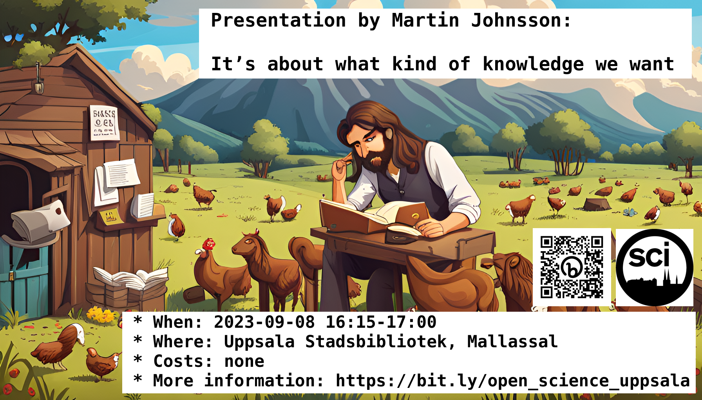
A company can be built around a non-sharable resource. It would be unfair to share that resource.
See also (5)
4.5 Open source alleviates constraints
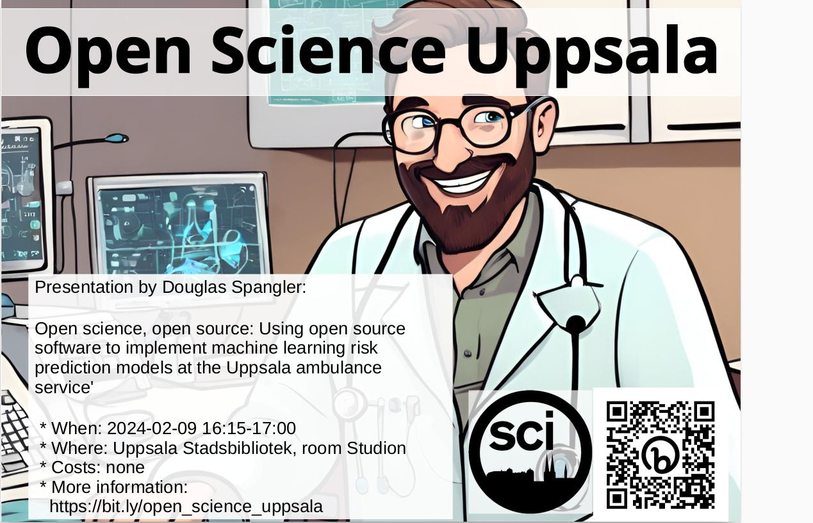
Openly develop useful software and avoiding bureaucracy helps your software getting used.
See also (2) on cultural and institutional constraints.
4.6 Qualitative research is different
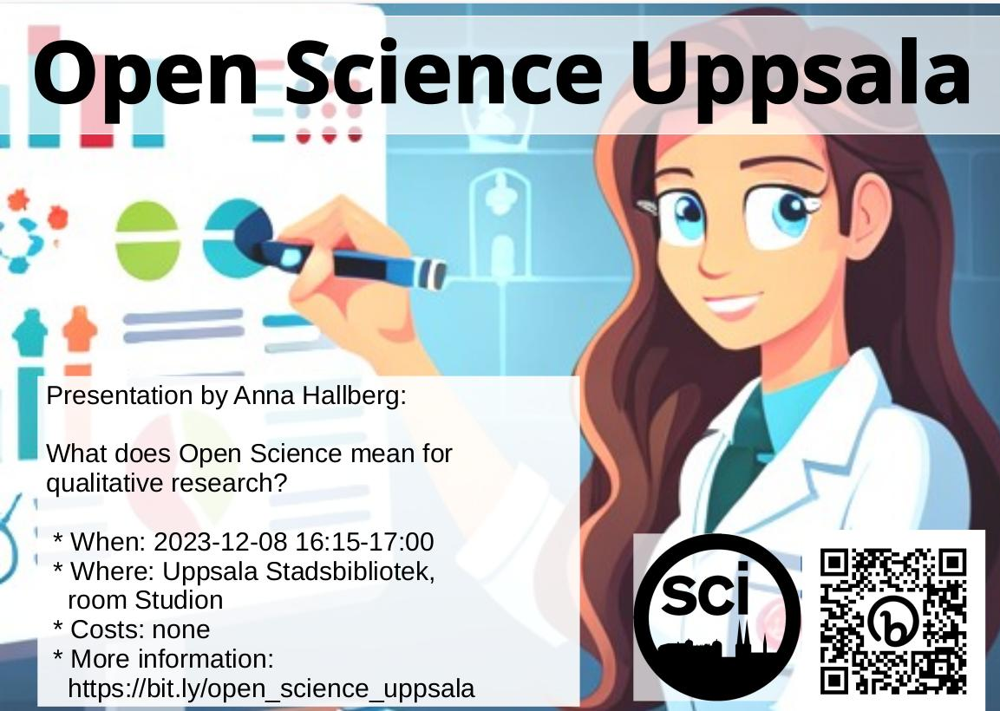
Replication does not make sense for qualitative papers, (e.g. ‘What is democracy?’), so those fields need to be judged differently.
See also (1).
4.7 Citizen science helps
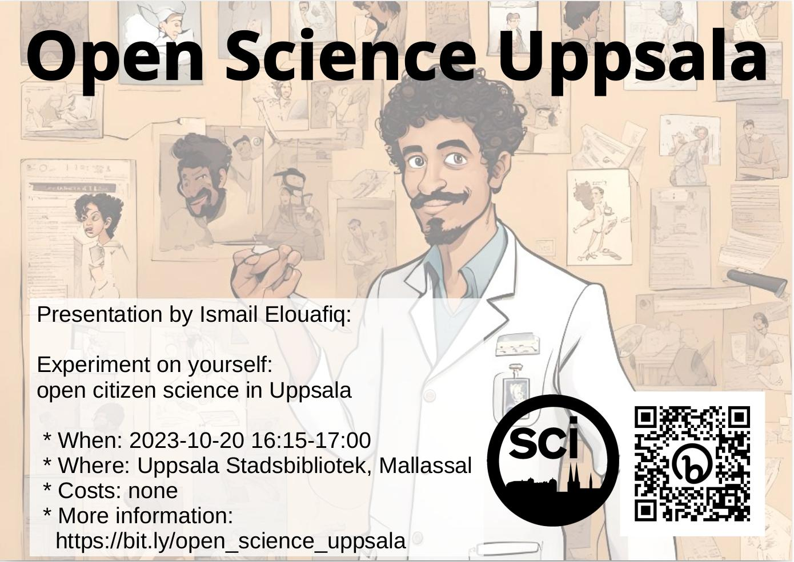
Achieving statistical power ignores the individual. Citizen science helps find strong effects in few individuals.
4.8 Preregistration with statistical power 1/2
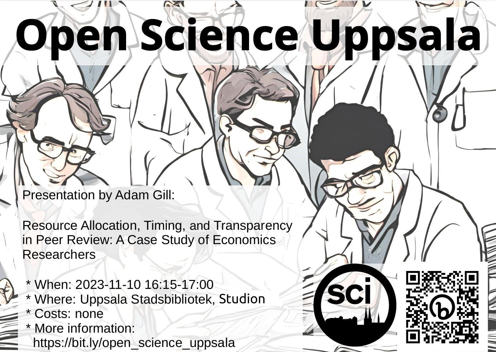
One can do a specification curve analysis in a pre-registered study to keep statistical power
4.9 Preregistration with statistical power 2/2 (11)
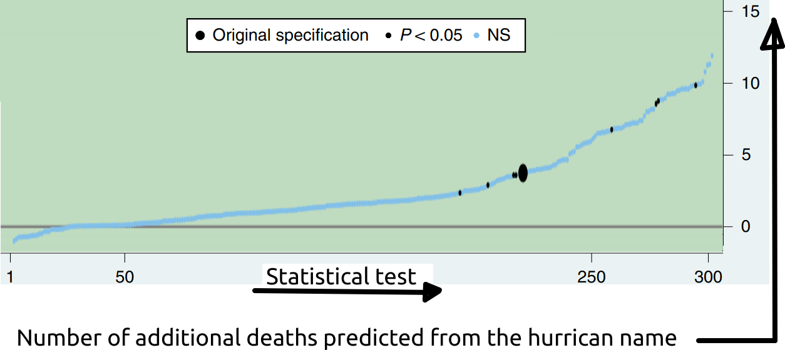4.10 Science is more complex 1/4
- Gustav Nilsonne
- Even if data is open, different teams can draw opposite conclusions with high confidence (12)
- This makes interpreting results even harder!
4.11 Science is more complex 2/4 (12)
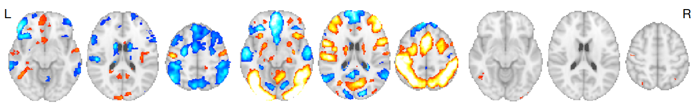Hypotheses: ‘There is [an effect] in [a brain area] between treatment A and B’
4.12 Science is more complex 3/4 (12)
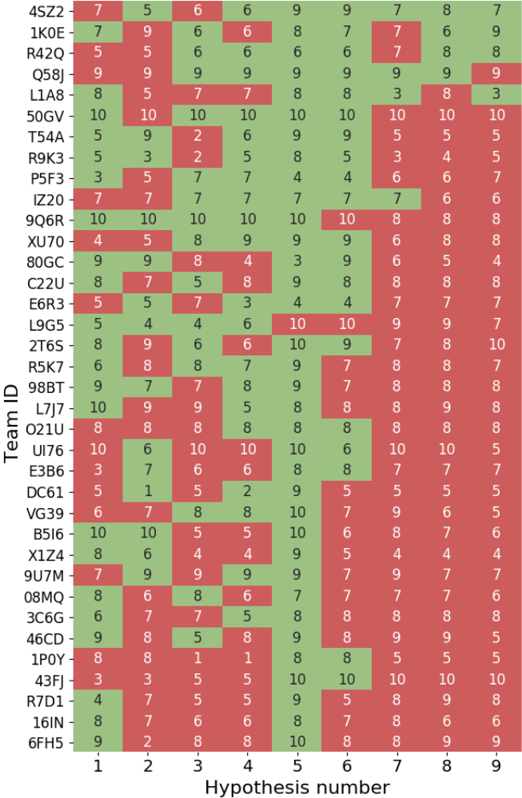
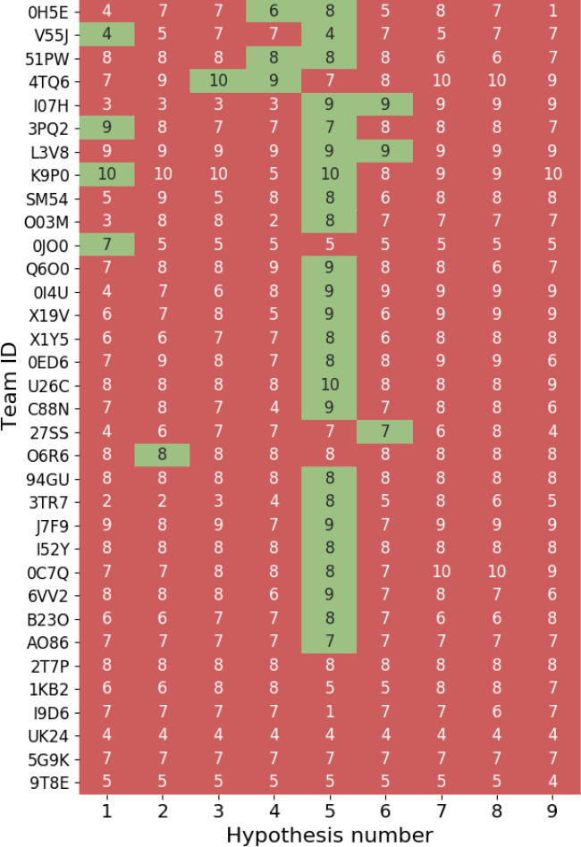
4.13 Science is more complex 4/4 (12)
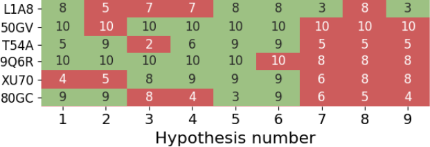And we are confident! Compare hypothesis 2 for team 2 and 4!
5 Another community
5.1 ENLIGHT RISE and Arqus Alliance Ambassador
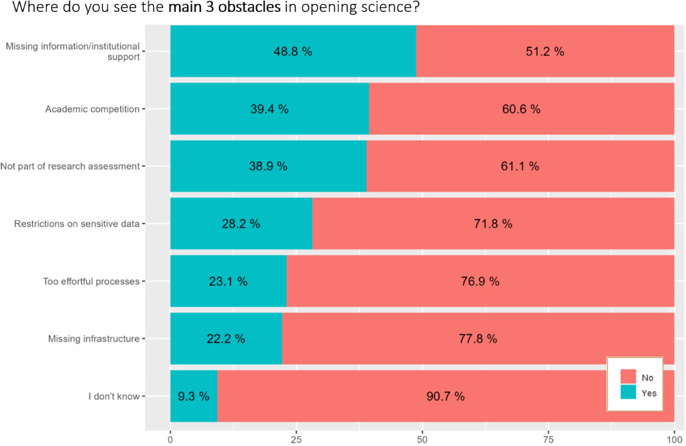
Previous webinar! 602 researchers. https://zenodo.org/records/10528857
6 Conclusion
- I hope to have convinced you that …
literature + community > literature + more_literature
- … is true, because people have broader ideas than you search the literature for
- This is a community too!
7 Questions?
https://github.com/richelbilderbeek/open_science_presentation_enlight_20240228
7.1 Appendix
7.2 How to pronounce my name?
| Language | Pronounciation |
|---|---|
| Dutch | ‘Rie-sjel’ |
| English | ‘Rea-shell’ |
| French | ‘Richèl’ |
| German | ‘Ri-shäll’ |
| Swedish | ‘Ri-kjell’ |
7.3 What I think
My quote (similar to (13)):
My favorite research question:
My prediction:
8 Open Science terminology
8.1 My Open Science definition
- The UNESCO definition (14)
- My summary of it: ‘doing science openly everywhere possible’
Source: https://en.wikipedia.org/wiki/File:Logo_UNESCO_2021.svg
8.2 Open Science definition 1/2 (14)
[O]pen science is defined as an inclusive construct that combines various movements and practices aiming to make multilingual scientific knowledge openly available, accessible and reusable for everyone, to increase scientific collaborations and sharing of information for the benefits of science and society, and to open the processes of scientific knowledge creation, evaluation and communication to societal actors beyond the traditional scientific community.
8.3 Open Science definition 2/2 (14)
It comprises all scientific disciplines and aspects of scholarly practices, including basic and applied sciences, natural and social sciences and the humanities, and it builds on the following key pillars: open scientific knowledge, open science infrastructures, science communication, open engagement of societal actors and open dialogue with other knowledge systems.
8.4 Open Science overview
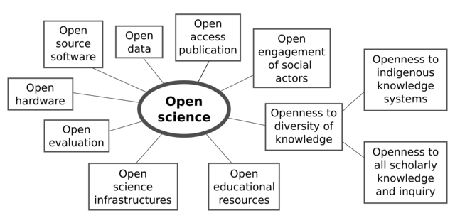Source: https://en.wikipedia.org/wiki/File:Osc2021-unesco-open-science-no-gray.png
8.5 Registered reports (15)
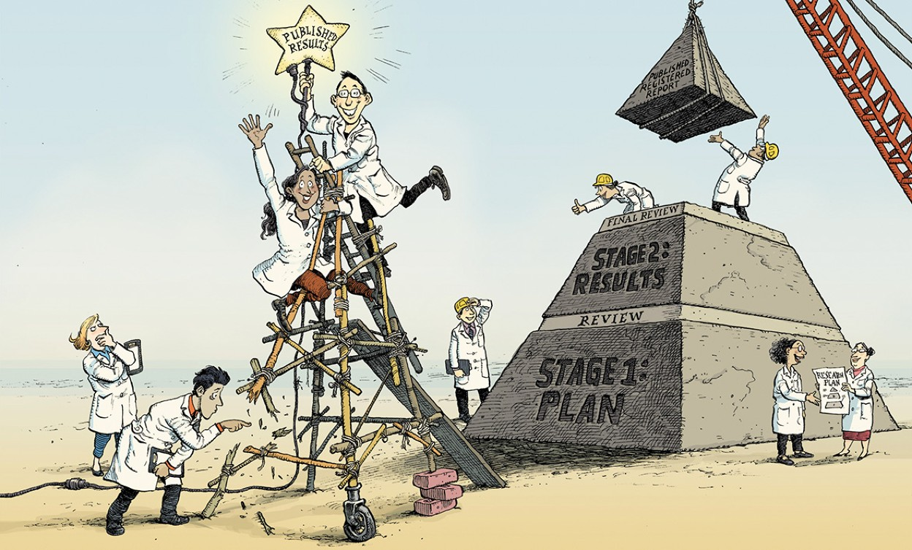Source: https://osf.io/ftkq8
8.6 Registered reports (15)
- pre-registration: to register a study before results
- registered report: a pre-registration that passed peer-review with publication guarantee
8.7 Literature: con
8.8 Experiment for bias for preregistration
Good science means never needing to say ‘trust me’. Simine Vazire
- My bias: likelier to believe open science papers, especially preregistrations
- Please ask me to participate in your experiment with hypothesis ‘Mock papers labeled as preregistrations pass peer review more often’!
9 My synthesis
- rooted in my experience
- may be provocative
- to be discussed
9.1 My synthesis: statement
Although Open Infrastructure development is paved with good intentions, cultural and institutional constraints in Sweden discourages Open Science even more.
Instead, we need to go from procedure-first to researcher-first.
9.2 My synthesis: assumptions
9.3 My synthesis: evidence
What a Swedish life-science scientist needs to do (example from https://www.scilifelab.se/data/repository/submission/):
- Read Submission Guidelines
- Submit (many steps)
- Wait for a human to review, may take days
I call this ‘procedure-first’.
9.4 My synthesis: solution
What I want:
- dump the data in 5 minutes
- get direct automated review that can be ignored
- be contacted later
- data steward does most of the work
- when improving the data, get direct automated review that can be ignored
I call this ‘researcher-first’. This ruthless approach should make Open Science take less time than regular science
9.5 Cultural limits Open infrastructure 4/4
My recommendation table in Sweden today:
| Open Science | Admin | Publish FAIR data? |
|---|---|---|
| Love | - | Yes |
| Like | Dislike (16) | No |
| Like | Less than dislike | Yes |
| Less than like | - | No |
9.6 How to support
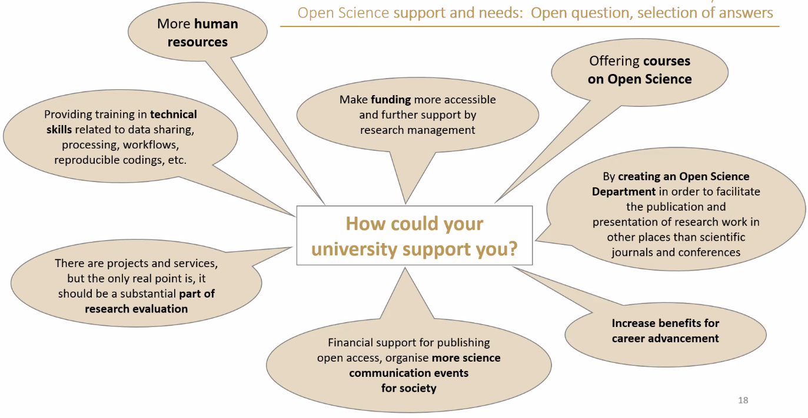10 Discussion
- Why do you think ‘Open Science is a pleonasm’ is invalid/valid?
- When do you think Open Science is worth the extra effort?
- I claim ‘If doing Open Science would take less time than regular science, it would quickly become the norm’
- Why do you agree/disagree?
- Why do you think this is possible yes/no?